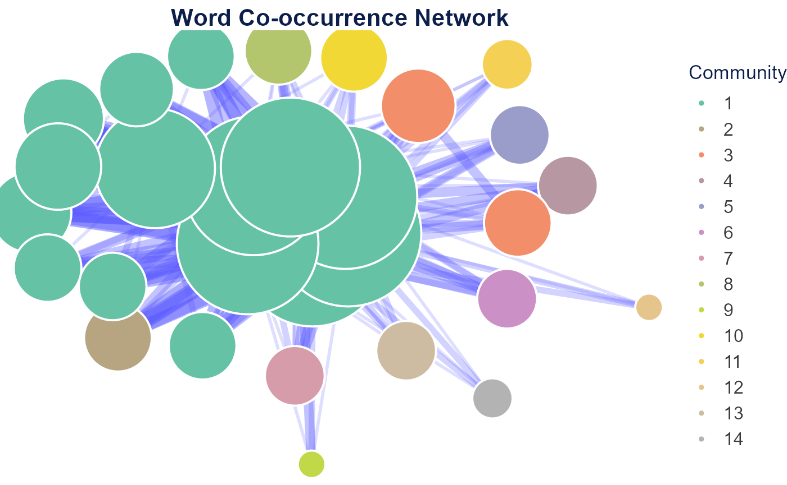
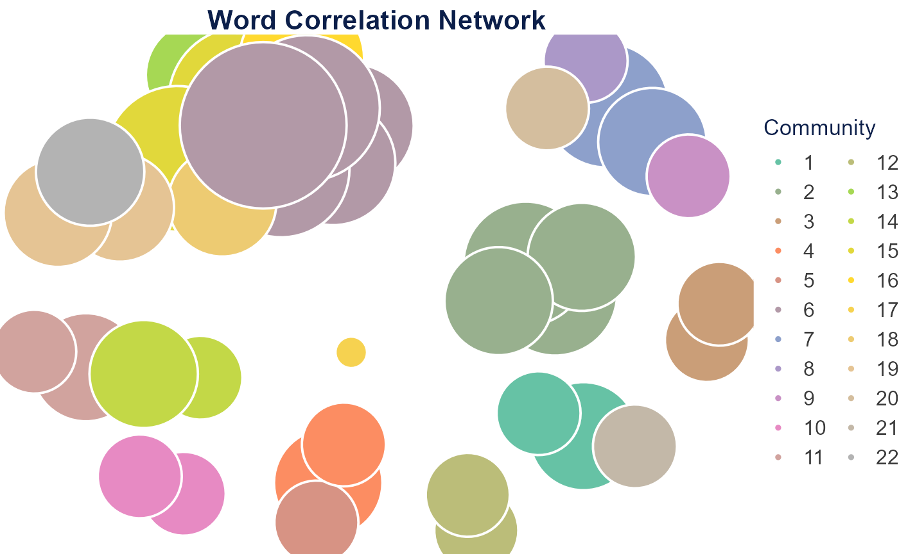
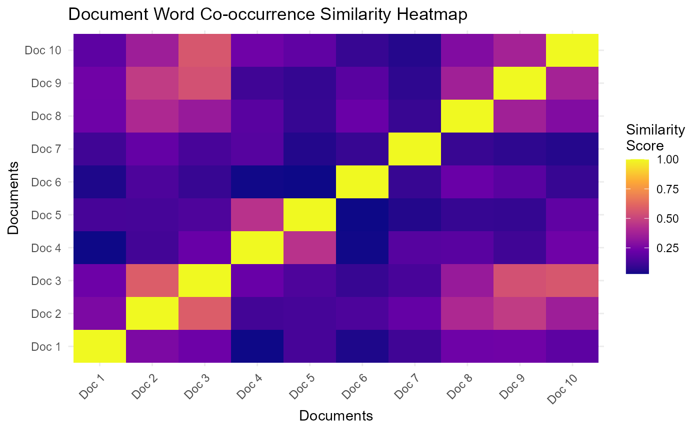
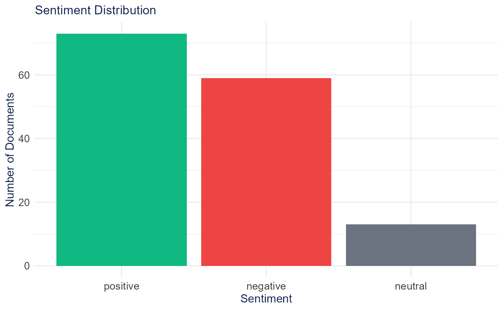
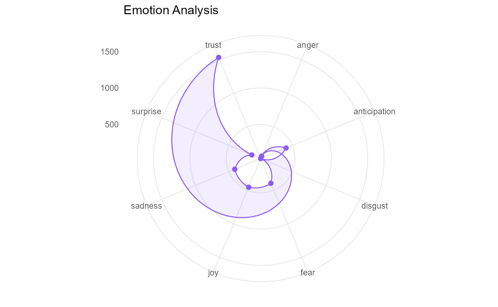
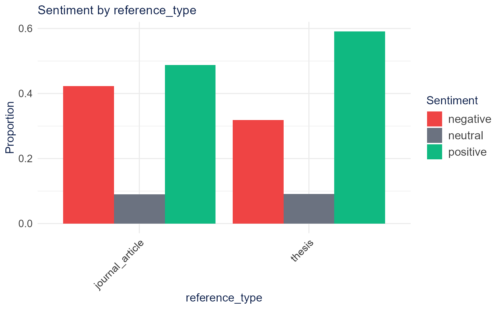

Semantic analysis examines relationships of meaning between words and documents. The sections below follow the Shiny app’s Semantic Analysis tabs in order.
Setup
A 150-document subset of SpecialEduTech keeps the build
fast; the full dataset works the same way.
library(TextAnalysisR)
mydata <- SpecialEduTech[1:150, ]
united_tbl <- unite_cols(mydata, listed_vars = c("title", "keyword", "abstract"))
tokens <- prep_texts(united_tbl, text_field = "united_texts", remove_stopwords = TRUE)
dfm_object <- quanteda::dfm(tokens)Word Co-occurrence
word_co_occurrence_network() builds a network of words
that co-occur across documents, with community detection and centrality
metrics.
network <- word_co_occurrence_network(
dfm_object,
co_occur_n = 30,
top_node_n = 30,
node_label_size = 22,
community_method = "leiden"
)
network$plot
network$top_nodes## x y label degree betweenness closeness eigenvector
## 1 -0.244 0.591 students 58 41.047 0.034 1.000
## 2 -0.189 0.405 mathematics 58 41.047 0.034 1.000
## 3 -0.041 0.533 disabilities 58 41.047 0.034 1.000
## 4 -0.053 0.764 instruction 56 34.631 0.033 0.986
## 5 -0.459 0.469 education 54 30.797 0.032 0.965
## 6 -0.434 0.837 learning 52 24.181 0.031 0.954
## 7 -0.281 0.956 computer 52 24.181 0.031 0.954
## 8 -0.843 0.948 assisted 38 7.722 0.026 0.785
## 9 -1.247 0.960 math 22 0.222 0.021 0.566
## 10 -1.224 1.264 school 20 0.000 0.021 0.537
## 11 -1.359 0.668 disabled 20 0.000 0.021 0.537
## 12 -0.920 1.452 study 18 0.000 0.020 0.504
## 13 0.250 1.347 problem 18 0.125 0.020 0.497
## 14 -0.997 -0.130 special 16 0.000 0.020 0.469
## 15 -0.653 1.661 teaching 16 0.000 0.020 0.469
## 16 -1.019 0.196 instructional 16 0.000 0.020 0.469
## 17 -0.646 -0.181 skills 16 0.000 0.020 0.469
## 18 -1.290 0.313 use 16 0.000 0.020 0.469
## 19 0.663 0.600 solving 16 0.000 0.020 0.452
## 20 -0.331 1.695 effects 16 0.000 0.020 0.469
## 21 -0.017 1.651 elementary 16 0.000 0.020 0.469
## 22 0.871 0.838 achievement 14 0.000 0.020 0.421
## 23 0.671 1.161 results 14 0.000 0.020 0.421
## 24 0.619 0.118 based 14 0.000 0.020 0.421
## 25 -0.263 -0.373 problems 14 0.000 0.020 0.421
## 26 0.200 -0.213 research 14 0.000 0.020 0.421
## 27 0.619 1.610 performance 12 0.000 0.019 0.362
## 28 0.558 -0.516 technology 10 0.000 0.019 0.304
## 29 -0.193 -0.936 student 8 0.000 0.019 0.243
## 30 1.208 0.063 using 8 0.000 0.019 0.245
## community frequency size_metric_log size text_size alpha
## 1 1 536 4.078 45.000 22.000 1.000
## 2 1 352 4.078 45.000 22.000 1.000
## 3 1 315 4.078 45.000 22.000 1.000
## 4 1 359 4.043 44.321 21.853 0.985
## 5 1 281 4.007 43.619 21.701 0.970
## 6 1 435 3.970 42.890 21.544 0.954
## 7 1 369 3.970 42.890 21.544 0.954
## 8 1 240 3.664 36.854 20.239 0.824
## 9 1 143 3.135 26.463 17.992 0.599
## 10 1 112 3.045 24.673 17.605 0.560
## 11 1 141 3.045 24.673 17.605 0.560
## 12 1 98 2.944 22.703 17.179 0.518
## 13 3 135 2.944 22.703 17.179 0.518
## 14 2 98 2.833 20.515 16.706 0.471
## 15 1 102 2.833 20.515 16.706 0.471
## 16 1 105 2.833 20.515 16.706 0.471
## 17 1 98 2.833 20.515 16.706 0.471
## 18 1 77 2.833 20.515 16.706 0.471
## 19 3 117 2.833 20.515 16.706 0.471
## 20 8 69 2.833 20.515 16.706 0.471
## 21 10 76 2.833 20.515 16.706 0.471
## 22 4 100 2.708 18.052 16.173 0.417
## 23 5 63 2.708 18.052 16.173 0.417
## 24 6 89 2.708 18.052 16.173 0.417
## 25 7 93 2.708 18.052 16.173 0.417
## 26 13 73 2.708 18.052 16.173 0.417
## 27 11 92 2.565 15.236 15.565 0.356
## 28 14 107 2.398 11.949 14.854 0.285
## 29 9 69 2.197 8.000 14.000 0.200
## 30 12 53 2.197 8.000 14.000 0.200
## hover_text
## 1 Word: students <br>Degree: 58 <br>Betweenness: 41.05 <br>Closeness: 0.03 <br>Eigenvector: 1 <br>Frequency: 536 <br>Community: 1
## 2 Word: mathematics <br>Degree: 58 <br>Betweenness: 41.05 <br>Closeness: 0.03 <br>Eigenvector: 1 <br>Frequency: 352 <br>Community: 1
## 3 Word: disabilities <br>Degree: 58 <br>Betweenness: 41.05 <br>Closeness: 0.03 <br>Eigenvector: 1 <br>Frequency: 315 <br>Community: 1
## 4 Word: instruction <br>Degree: 56 <br>Betweenness: 34.63 <br>Closeness: 0.03 <br>Eigenvector: 0.99 <br>Frequency: 359 <br>Community: 1
## 5 Word: education <br>Degree: 54 <br>Betweenness: 30.8 <br>Closeness: 0.03 <br>Eigenvector: 0.96 <br>Frequency: 281 <br>Community: 1
## 6 Word: learning <br>Degree: 52 <br>Betweenness: 24.18 <br>Closeness: 0.03 <br>Eigenvector: 0.95 <br>Frequency: 435 <br>Community: 1
## 7 Word: computer <br>Degree: 52 <br>Betweenness: 24.18 <br>Closeness: 0.03 <br>Eigenvector: 0.95 <br>Frequency: 369 <br>Community: 1
## 8 Word: assisted <br>Degree: 38 <br>Betweenness: 7.72 <br>Closeness: 0.03 <br>Eigenvector: 0.79 <br>Frequency: 240 <br>Community: 1
## 9 Word: math <br>Degree: 22 <br>Betweenness: 0.22 <br>Closeness: 0.02 <br>Eigenvector: 0.57 <br>Frequency: 143 <br>Community: 1
## 10 Word: school <br>Degree: 20 <br>Betweenness: 0 <br>Closeness: 0.02 <br>Eigenvector: 0.54 <br>Frequency: 112 <br>Community: 1
## 11 Word: disabled <br>Degree: 20 <br>Betweenness: 0 <br>Closeness: 0.02 <br>Eigenvector: 0.54 <br>Frequency: 141 <br>Community: 1
## 12 Word: study <br>Degree: 18 <br>Betweenness: 0 <br>Closeness: 0.02 <br>Eigenvector: 0.5 <br>Frequency: 98 <br>Community: 1
## 13 Word: problem <br>Degree: 18 <br>Betweenness: 0.12 <br>Closeness: 0.02 <br>Eigenvector: 0.5 <br>Frequency: 135 <br>Community: 3
## 14 Word: special <br>Degree: 16 <br>Betweenness: 0 <br>Closeness: 0.02 <br>Eigenvector: 0.47 <br>Frequency: 98 <br>Community: 2
## 15 Word: teaching <br>Degree: 16 <br>Betweenness: 0 <br>Closeness: 0.02 <br>Eigenvector: 0.47 <br>Frequency: 102 <br>Community: 1
## 16 Word: instructional <br>Degree: 16 <br>Betweenness: 0 <br>Closeness: 0.02 <br>Eigenvector: 0.47 <br>Frequency: 105 <br>Community: 1
## 17 Word: skills <br>Degree: 16 <br>Betweenness: 0 <br>Closeness: 0.02 <br>Eigenvector: 0.47 <br>Frequency: 98 <br>Community: 1
## 18 Word: use <br>Degree: 16 <br>Betweenness: 0 <br>Closeness: 0.02 <br>Eigenvector: 0.47 <br>Frequency: 77 <br>Community: 1
## 19 Word: solving <br>Degree: 16 <br>Betweenness: 0 <br>Closeness: 0.02 <br>Eigenvector: 0.45 <br>Frequency: 117 <br>Community: 3
## 20 Word: effects <br>Degree: 16 <br>Betweenness: 0 <br>Closeness: 0.02 <br>Eigenvector: 0.47 <br>Frequency: 69 <br>Community: 8
## 21 Word: elementary <br>Degree: 16 <br>Betweenness: 0 <br>Closeness: 0.02 <br>Eigenvector: 0.47 <br>Frequency: 76 <br>Community: 10
## 22 Word: achievement <br>Degree: 14 <br>Betweenness: 0 <br>Closeness: 0.02 <br>Eigenvector: 0.42 <br>Frequency: 100 <br>Community: 4
## 23 Word: results <br>Degree: 14 <br>Betweenness: 0 <br>Closeness: 0.02 <br>Eigenvector: 0.42 <br>Frequency: 63 <br>Community: 5
## 24 Word: based <br>Degree: 14 <br>Betweenness: 0 <br>Closeness: 0.02 <br>Eigenvector: 0.42 <br>Frequency: 89 <br>Community: 6
## 25 Word: problems <br>Degree: 14 <br>Betweenness: 0 <br>Closeness: 0.02 <br>Eigenvector: 0.42 <br>Frequency: 93 <br>Community: 7
## 26 Word: research <br>Degree: 14 <br>Betweenness: 0 <br>Closeness: 0.02 <br>Eigenvector: 0.42 <br>Frequency: 73 <br>Community: 13
## 27 Word: performance <br>Degree: 12 <br>Betweenness: 0 <br>Closeness: 0.02 <br>Eigenvector: 0.36 <br>Frequency: 92 <br>Community: 11
## 28 Word: technology <br>Degree: 10 <br>Betweenness: 0 <br>Closeness: 0.02 <br>Eigenvector: 0.3 <br>Frequency: 107 <br>Community: 14
## 29 Word: student <br>Degree: 8 <br>Betweenness: 0 <br>Closeness: 0.02 <br>Eigenvector: 0.24 <br>Frequency: 69 <br>Community: 9
## 30 Word: using <br>Degree: 8 <br>Betweenness: 0 <br>Closeness: 0.02 <br>Eigenvector: 0.24 <br>Frequency: 53 <br>Community: 12
## color
## 1 #66C2A5
## 2 #66C2A5
## 3 #66C2A5
## 4 #66C2A5
## 5 #66C2A5
## 6 #66C2A5
## 7 #66C2A5
## 8 #66C2A5
## 9 #66C2A5
## 10 #66C2A5
## 11 #66C2A5
## 12 #66C2A5
## 13 #F38E6A
## 14 #B6A580
## 15 #66C2A5
## 16 #66C2A5
## 17 #66C2A5
## 18 #66C2A5
## 19 #F38E6A
## 20 #B4C66D
## 21 #F1D834
## 22 #B798A2
## 23 #9A9CC9
## 24 #CB90C5
## 25 #D79CA9
## 26 #CDBCA2
## 27 #F4D055
## 28 #B3B3B3
## 29 #C1D848
## 30 #E6C58C
network$tableNetwork Centrality Table
network$summaryNetwork Summary
Word Correlation
word_correlation_network() connects words by phi
correlation of their document co-occurrence patterns.
corr_network <- word_correlation_network(
dfm_object,
common_term_n = 10,
corr_n = 0.4,
community_method = "leiden"
)
corr_network$plot
corr_network$top_nodes## x y label degree betweenness closeness eigenvector
## 1 -2.720 2.827 group 16 31.267 0.053 1.000
## 2 -3.025 3.307 groups 10 9.700 0.045 0.742
## 3 -3.932 2.189 significant 10 33.917 0.048 0.505
## 4 -2.102 3.156 experimental 10 5.017 0.040 0.735
## 5 -2.897 4.013 two 8 2.033 0.037 0.579
## 6 -2.464 1.991 control 8 5.117 0.038 0.550
## 7 1.413 -0.373 retarded 6 0.500 0.333 0.000
## 8 1.001 0.194 mentally 6 0.500 0.333 0.000
## 9 -1.469 2.816 posttest 6 0.533 0.036 0.496
## 10 -1.729 2.109 pretest 6 0.583 0.036 0.462
## 11 2.142 3.207 drill 6 5.000 0.200 0.000
## 12 -2.173 4.105 differences 6 0.333 0.034 0.464
## 13 1.819 -3.088 solving 4 1.000 0.500 0.000
## 14 1.794 0.324 educable 4 0.000 0.250 0.000
## 15 -1.799 -3.976 assisted 4 1.000 0.500 0.000
## 16 2.794 2.510 game 4 3.000 0.167 0.000
## 17 -5.232 -1.777 literature 4 2.000 0.250 0.000
## 18 -3.614 3.786 compared 4 0.000 0.034 0.357
## 19 0.616 -0.518 disorder 4 0.000 0.250 0.000
## 20 -3.300 1.359 treatment 4 2.000 0.034 0.238
## 21 -4.751 1.263 scores 4 5.500 0.032 0.127
## 22 -5.629 1.161 received 4 0.500 0.024 0.057
## 23 -5.172 1.944 purpose 4 5.500 0.032 0.127
## 24 -4.413 -1.905 findings 4 2.000 0.250 0.000
## 25 1.181 -2.650 problem 2 0.000 0.333 0.000
## 26 3.566 -1.260 paper 2 0.000 1.000 0.000
## 27 3.744 -0.568 pencil 2 0.000 1.000 0.000
## 28 -1.966 -4.731 computer 2 0.000 0.333 0.000
## 29 1.848 4.053 practice 2 0.000 0.125 0.000
## 30 3.308 1.856 games 2 0.000 0.111 0.000
## 31 -3.846 -4.184 humans 2 0.000 1.000 0.000
## 32 -4.469 -3.853 child 2 0.000 1.000 0.000
## 33 -5.963 -1.480 review 2 0.000 0.167 0.000
## 34 0.300 -4.881 social 2 0.000 1.000 0.000
## 35 0.178 -4.205 areas 2 0.000 1.000 0.000
## 36 -1.576 -3.246 instruction 2 0.000 0.333 0.000
## 37 -3.609 -1.975 implications 2 0.000 0.167 0.000
## 38 1.301 3.147 facts 2 0.000 0.125 0.000
## 39 2.547 -3.282 word 2 0.000 0.333 0.000
## 40 -1.472 -1.493 post 0 0.000 NaN 0.000
## community frequency size_metric_log size text_size alpha
## 1 6 90 2.833 45.000 22.000 1.000
## 2 15 43 2.398 39.315 20.771 0.877
## 3 15 41 2.398 39.315 20.771 0.877
## 4 6 35 2.398 39.315 20.771 0.877
## 5 13 43 2.197 36.694 20.204 0.820
## 6 6 43 2.197 36.694 20.204 0.820
## 7 2 23 1.946 33.412 19.495 0.749
## 8 2 34 1.946 33.412 19.495 0.749
## 9 6 22 1.946 33.412 19.495 0.749
## 10 6 16 1.946 33.412 19.495 0.749
## 11 7 36 1.946 33.412 19.495 0.749
## 12 16 29 1.946 33.412 19.495 0.749
## 13 1 117 1.609 29.018 18.544 0.654
## 14 2 33 1.609 29.018 18.544 0.654
## 15 4 240 1.609 29.018 18.544 0.654
## 16 7 29 1.609 29.018 18.544 0.654
## 17 11 14 1.609 29.018 18.544 0.654
## 18 13 23 1.609 29.018 18.544 0.654
## 19 2 12 1.609 29.018 18.544 0.654
## 20 18 31 1.609 29.018 18.544 0.654
## 21 19 29 1.609 29.018 18.544 0.654
## 22 19 18 1.609 29.018 18.544 0.654
## 23 22 16 1.609 29.018 18.544 0.654
## 24 14 19 1.609 29.018 18.544 0.654
## 25 1 135 1.099 22.347 17.102 0.510
## 26 3 25 1.099 22.347 17.102 0.510
## 27 3 19 1.099 22.347 17.102 0.510
## 28 5 369 1.099 22.347 17.102 0.510
## 29 8 69 1.099 22.347 17.102 0.510
## 30 9 30 1.099 22.347 17.102 0.510
## 31 10 13 1.099 22.347 17.102 0.510
## 32 10 18 1.099 22.347 17.102 0.510
## 33 11 24 1.099 22.347 17.102 0.510
## 34 12 13 1.099 22.347 17.102 0.510
## 35 12 17 1.099 22.347 17.102 0.510
## 36 4 359 1.099 22.347 17.102 0.510
## 37 14 24 1.099 22.347 17.102 0.510
## 38 20 39 1.099 22.347 17.102 0.510
## 39 21 42 1.099 22.347 17.102 0.510
## 40 17 20 0.000 8.000 14.000 0.200
## hover_text
## 1 Word: group <br>Degree: 16 <br>Betweenness: 31.27 <br>Closeness: 0.05 <br>Eigenvector: 1 <br>Frequency: 90 <br>Community: 6
## 2 Word: groups <br>Degree: 10 <br>Betweenness: 9.7 <br>Closeness: 0.05 <br>Eigenvector: 0.74 <br>Frequency: 43 <br>Community: 15
## 3 Word: significant <br>Degree: 10 <br>Betweenness: 33.92 <br>Closeness: 0.05 <br>Eigenvector: 0.5 <br>Frequency: 41 <br>Community: 15
## 4 Word: experimental <br>Degree: 10 <br>Betweenness: 5.02 <br>Closeness: 0.04 <br>Eigenvector: 0.73 <br>Frequency: 35 <br>Community: 6
## 5 Word: two <br>Degree: 8 <br>Betweenness: 2.03 <br>Closeness: 0.04 <br>Eigenvector: 0.58 <br>Frequency: 43 <br>Community: 13
## 6 Word: control <br>Degree: 8 <br>Betweenness: 5.12 <br>Closeness: 0.04 <br>Eigenvector: 0.55 <br>Frequency: 43 <br>Community: 6
## 7 Word: retarded <br>Degree: 6 <br>Betweenness: 0.5 <br>Closeness: 0.33 <br>Eigenvector: 0 <br>Frequency: 23 <br>Community: 2
## 8 Word: mentally <br>Degree: 6 <br>Betweenness: 0.5 <br>Closeness: 0.33 <br>Eigenvector: 0 <br>Frequency: 34 <br>Community: 2
## 9 Word: posttest <br>Degree: 6 <br>Betweenness: 0.53 <br>Closeness: 0.04 <br>Eigenvector: 0.5 <br>Frequency: 22 <br>Community: 6
## 10 Word: pretest <br>Degree: 6 <br>Betweenness: 0.58 <br>Closeness: 0.04 <br>Eigenvector: 0.46 <br>Frequency: 16 <br>Community: 6
## 11 Word: drill <br>Degree: 6 <br>Betweenness: 5 <br>Closeness: 0.2 <br>Eigenvector: 0 <br>Frequency: 36 <br>Community: 7
## 12 Word: differences <br>Degree: 6 <br>Betweenness: 0.33 <br>Closeness: 0.03 <br>Eigenvector: 0.46 <br>Frequency: 29 <br>Community: 16
## 13 Word: solving <br>Degree: 4 <br>Betweenness: 1 <br>Closeness: 0.5 <br>Eigenvector: 0 <br>Frequency: 117 <br>Community: 1
## 14 Word: educable <br>Degree: 4 <br>Betweenness: 0 <br>Closeness: 0.25 <br>Eigenvector: 0 <br>Frequency: 33 <br>Community: 2
## 15 Word: assisted <br>Degree: 4 <br>Betweenness: 1 <br>Closeness: 0.5 <br>Eigenvector: 0 <br>Frequency: 240 <br>Community: 4
## 16 Word: game <br>Degree: 4 <br>Betweenness: 3 <br>Closeness: 0.17 <br>Eigenvector: 0 <br>Frequency: 29 <br>Community: 7
## 17 Word: literature <br>Degree: 4 <br>Betweenness: 2 <br>Closeness: 0.25 <br>Eigenvector: 0 <br>Frequency: 14 <br>Community: 11
## 18 Word: compared <br>Degree: 4 <br>Betweenness: 0 <br>Closeness: 0.03 <br>Eigenvector: 0.36 <br>Frequency: 23 <br>Community: 13
## 19 Word: disorder <br>Degree: 4 <br>Betweenness: 0 <br>Closeness: 0.25 <br>Eigenvector: 0 <br>Frequency: 12 <br>Community: 2
## 20 Word: treatment <br>Degree: 4 <br>Betweenness: 2 <br>Closeness: 0.03 <br>Eigenvector: 0.24 <br>Frequency: 31 <br>Community: 18
## 21 Word: scores <br>Degree: 4 <br>Betweenness: 5.5 <br>Closeness: 0.03 <br>Eigenvector: 0.13 <br>Frequency: 29 <br>Community: 19
## 22 Word: received <br>Degree: 4 <br>Betweenness: 0.5 <br>Closeness: 0.02 <br>Eigenvector: 0.06 <br>Frequency: 18 <br>Community: 19
## 23 Word: purpose <br>Degree: 4 <br>Betweenness: 5.5 <br>Closeness: 0.03 <br>Eigenvector: 0.13 <br>Frequency: 16 <br>Community: 22
## 24 Word: findings <br>Degree: 4 <br>Betweenness: 2 <br>Closeness: 0.25 <br>Eigenvector: 0 <br>Frequency: 19 <br>Community: 14
## 25 Word: problem <br>Degree: 2 <br>Betweenness: 0 <br>Closeness: 0.33 <br>Eigenvector: 0 <br>Frequency: 135 <br>Community: 1
## 26 Word: paper <br>Degree: 2 <br>Betweenness: 0 <br>Closeness: 1 <br>Eigenvector: 0 <br>Frequency: 25 <br>Community: 3
## 27 Word: pencil <br>Degree: 2 <br>Betweenness: 0 <br>Closeness: 1 <br>Eigenvector: 0 <br>Frequency: 19 <br>Community: 3
## 28 Word: computer <br>Degree: 2 <br>Betweenness: 0 <br>Closeness: 0.33 <br>Eigenvector: 0 <br>Frequency: 369 <br>Community: 5
## 29 Word: practice <br>Degree: 2 <br>Betweenness: 0 <br>Closeness: 0.12 <br>Eigenvector: 0 <br>Frequency: 69 <br>Community: 8
## 30 Word: games <br>Degree: 2 <br>Betweenness: 0 <br>Closeness: 0.11 <br>Eigenvector: 0 <br>Frequency: 30 <br>Community: 9
## 31 Word: humans <br>Degree: 2 <br>Betweenness: 0 <br>Closeness: 1 <br>Eigenvector: 0 <br>Frequency: 13 <br>Community: 10
## 32 Word: child <br>Degree: 2 <br>Betweenness: 0 <br>Closeness: 1 <br>Eigenvector: 0 <br>Frequency: 18 <br>Community: 10
## 33 Word: review <br>Degree: 2 <br>Betweenness: 0 <br>Closeness: 0.17 <br>Eigenvector: 0 <br>Frequency: 24 <br>Community: 11
## 34 Word: social <br>Degree: 2 <br>Betweenness: 0 <br>Closeness: 1 <br>Eigenvector: 0 <br>Frequency: 13 <br>Community: 12
## 35 Word: areas <br>Degree: 2 <br>Betweenness: 0 <br>Closeness: 1 <br>Eigenvector: 0 <br>Frequency: 17 <br>Community: 12
## 36 Word: instruction <br>Degree: 2 <br>Betweenness: 0 <br>Closeness: 0.33 <br>Eigenvector: 0 <br>Frequency: 359 <br>Community: 4
## 37 Word: implications <br>Degree: 2 <br>Betweenness: 0 <br>Closeness: 0.17 <br>Eigenvector: 0 <br>Frequency: 24 <br>Community: 14
## 38 Word: facts <br>Degree: 2 <br>Betweenness: 0 <br>Closeness: 0.12 <br>Eigenvector: 0 <br>Frequency: 39 <br>Community: 20
## 39 Word: word <br>Degree: 2 <br>Betweenness: 0 <br>Closeness: 0.33 <br>Eigenvector: 0 <br>Frequency: 42 <br>Community: 21
## 40 Word: post <br>Degree: 0 <br>Betweenness: 0 <br>Closeness: NaN <br>Eigenvector: 0 <br>Frequency: 20 <br>Community: 17
## color
## 1 #B299A7
## 2 #E1D83B
## 3 #E1D83B
## 4 #B299A7
## 5 #A6D854
## 6 #B299A7
## 7 #98B08E
## 8 #98B08E
## 9 #B299A7
## 10 #B299A7
## 11 #8DA0CB
## 12 #FFD92F
## 13 #66C2A5
## 14 #98B08E
## 15 #FC8D62
## 16 #8DA0CB
## 17 #D1A39E
## 18 #A6D854
## 19 #98B08E
## 20 #EDCB72
## 21 #E5C494
## 22 #E5C494
## 23 #B3B3B3
## 24 #C3D847
## 25 #66C2A5
## 26 #CA9E78
## 27 #CA9E78
## 28 #D79384
## 29 #AB98C8
## 30 #C991C5
## 31 #E78AC3
## 32 #E78AC3
## 33 #D1A39E
## 34 #BBBD79
## 35 #BBBD79
## 36 #FC8D62
## 37 #C3D847
## 38 #D4BE9E
## 39 #C3B8A8
## 40 #F6D250
corr_network$tableNetwork Centrality Table
Document Similarity
semantic_similarity_analysis() compares documents by
words, n-grams, or embeddings (embeddings require Python). The example
below uses word features on a subset and renders a cosine similarity
heatmap.
subset_texts <- united_tbl$united_texts[1:10]
similarity <- semantic_similarity_analysis(
subset_texts,
document_feature_type = "words",
similarity_method = "cosine",
verbose = FALSE
)
plot_similarity_heatmap(similarity$similarity_matrix, method_name = "Cosine")
| Method | Description | Requires |
|---|---|---|
| Words | Word-frequency vectors (bag-of-words) | none |
| N-grams | Word-sequence vectors | none |
| Embeddings | Transformer sentence vectors | Python |
Comparative Analysis
Comparative analysis scores how similar documents in one category are
to a reference category.
extract_cross_category_similarities() pulls cross-category
pairs from a similarity matrix and
analyze_similarity_gaps() summarizes the differences. The
example uses the first 30 documents.
term_matrix <- as.matrix(dfm_object)[1:30, ]
normalized <- term_matrix / sqrt(rowSums(term_matrix^2))
sim_matrix <- normalized %*% t(normalized)
docs_data <- data.frame(
display_name = paste0("doc", 1:30),
reference_type = quanteda::docvars(dfm_object, "reference_type")[1:30]
)
dimnames(sim_matrix) <- list(docs_data$display_name, docs_data$display_name)
cross <- extract_cross_category_similarities(
sim_matrix,
docs_data,
reference_category = "journal_article",
category_var = "reference_type",
id_var = "display_name"
)
gaps <- analyze_similarity_gaps(cross)
gaps$summary_stats## # A tibble: 1 × 7
## other_category mean_similarity median_similarity sd_similarity min_similarity
## <fct> <dbl> <dbl> <dbl> <dbl>
## 1 thesis 0.268 0.271 0.14 0.025
## # ℹ 2 more variables: max_similarity <dbl>, n_pairs <int>Semantic Search
run_rag_search() retrieves the documents most relevant
to a query using embedding similarity. It requires an OpenAI or Gemini
API key; see AI Integration.
results <- run_rag_search(
query = "math intervention for students with disabilities",
documents = united_tbl$united_texts,
provider = "openai"
)Sentiment & Emotion
sentiment_lexicon_analysis() scores documents with the
Bing, AFINN, or NRC lexicon. NRC also yields discrete emotions for
plot_emotion_radar().
sentiment <- sentiment_lexicon_analysis(dfm_object, lexicon = "bing")
plot_sentiment_distribution(sentiment$document_sentiment)
emotion <- sentiment_lexicon_analysis(dfm_object, lexicon = "nrc")
plot_emotion_radar(emotion$emotion_scores)
plot_sentiment_by_category() compares sentiment across a
metadata category after joining it to the scored documents. Transformer
(sentiment_embedding_analysis()) and LLM
(analyze_sentiment_llm()) scoring require Python or an API
key and are not run here.
scored <- sentiment_lexicon_analysis(dfm_object, lexicon = "bing")$document_sentiment
scored$reference_type <- quanteda::docvars(dfm_object, "reference_type")[
match(scored$document, quanteda::docnames(dfm_object))
]
plot_sentiment_by_category(scored, category_var = "reference_type")
Document Groups
cluster_embeddings() groups documents from a feature
matrix. K-means and hierarchical clustering run in base R; the app’s
default UMAP + DBSCAN path requires Python.
generate_cluster_labels_auto() labels each group with its
most distinctive terms.
data_matrix <- as.matrix(dfm_object)
groups <- cluster_embeddings(data_matrix, method = "kmeans", n_clusters = 5, verbose = FALSE)
groups$n_clusters## [1] 5
labels <- generate_cluster_labels_auto(data_matrix, groups$clusters, method = "tfidf", n_terms = 3)
labels## $`1`
## [1] "tutor, reward, arousal"
##
## $`2`
## [1] "educable, mentally, handicapped"
##
## $`3`
## [1] "problem, learning, solving"
##
## $`4`
## [1] "gender, receive, multimedia"
##
## $`5`
## [1] "educable, basal, classified"A 2-D map of the groups uses reduce_dimensions() (PCA
runs in base R; t-SNE and UMAP need their packages).
coords <- reduce_dimensions(data_matrix, method = "PCA", n_components = 2, verbose = FALSE)
head(coords$reduced_data)##
## docs PC1 PC2
## text1 -1.718002 -2.7258645
## text2 -1.063163 -1.6155706
## text3 -1.275526 -0.5355708
## text4 -2.250666 -3.0168685
## text5 -2.300703 -2.6293223
## text6 3.205013 21.3830433